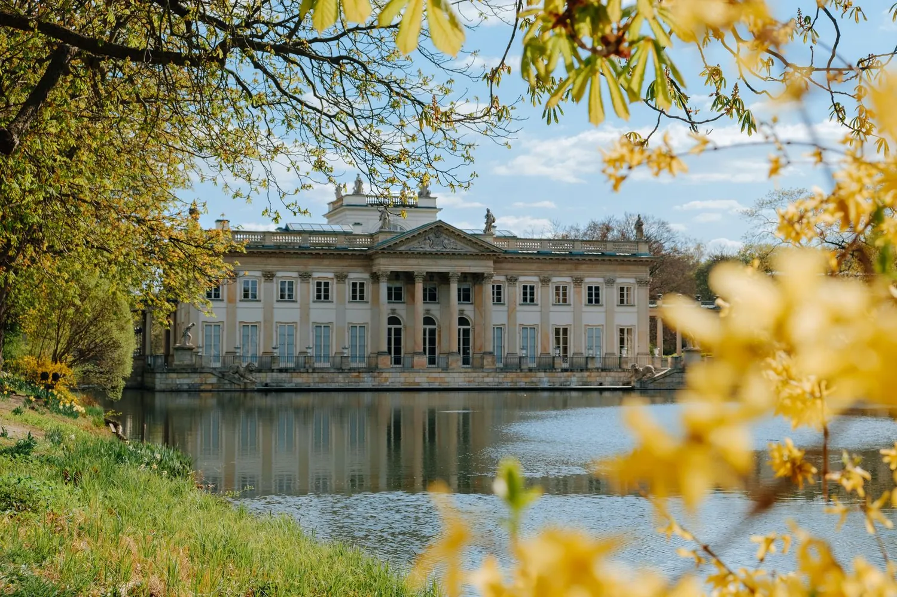

Варшава в русі: як зробити громадський транспорт зручнішим
Новини
- У центрі уваги — транспортні маршрути польських міст
- Як змінюється міський простір: пояснення та приклади
- ГОЛОВНЕ: Варшава в русі: як зробити транспорт зручнішим
- Доступність для всіх: на що звертати увагу у плануванні
- Погляд зблизька: як змінювалася архітектура Варшави
- Краків, Гданськ, Варшава: маршрути для вихідного
- Варшавські культурні простори: ідеї для вихідних
- Як читати інфографіку про розвиток міста
- Фото дня: ранкова Варшава у різних районах
Публікації

Трамваї Варшави: чому деталі маршруту мають значення
Зручний маршрут складається не лише з поїздки, а й з кожного кроку до станції.

Міські зміни без поспіху: що варто обговорити громаді
Погляд на те, як прості щоденні потреби формують сучасні міста.

Краківський Ринок: культурний простір у серці міста
Історична площа поєднує архітектуру, щоденні маршрути та сучасне культурне життя.

Вісла і мости: нові ракурси польської столиці
Річка, мости та набережні допомагають побачити столицю по-новому.
Відео
Дивитися матеріал →Фото


Надзвичайні події
Інфраструктура міста: від задуму до щоденного користування
Рішення, які помітні не на папері, а на звичних маршрутах людей.
Суспільство
Доступне місто: з чого починається комфортний шлях
Продуманий рух містом має бути зрозумілим для кожного.
Політика
Як працює міське самоврядування у Польщі
Приклад редакційного розбору важливої міської теми.
У світі
Міста світу: ідеї, що працюють у публічному просторі
Що можна взяти до уваги, створюючи зручні вулиці.
Культура
Парк Лазенки: історія, архітектура і міський простір
Місця, де природа і культурна спадщина зустрічаються в місті.
СпортВаршава для руху: прогулянки, парки й веломаршрути
Ідеї для активного вихідного у знайомому місті.
Найцікавіше
Побачити місто інакше: деталі, повз які ми проходимо
Невеликі відкриття у звичних місцях стають початком нових історій.
Культура в кадрі: як розповідати про польські міста
Мова, простір і люди — три частини важливої розмови.

Вечірнє місто: коротка історія світла та руху
Фотопрогулянка для тих, хто хоче подивитися на знайоме свіжим поглядом.